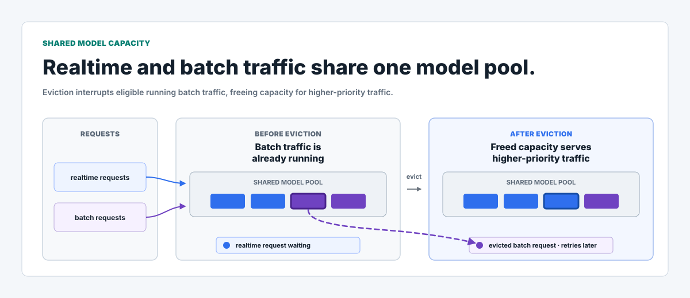
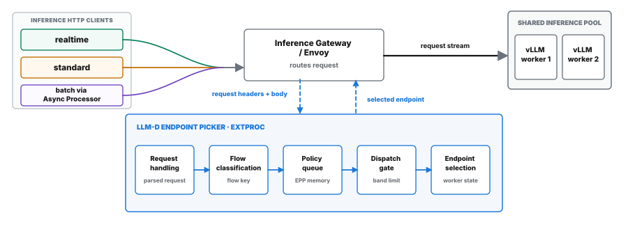
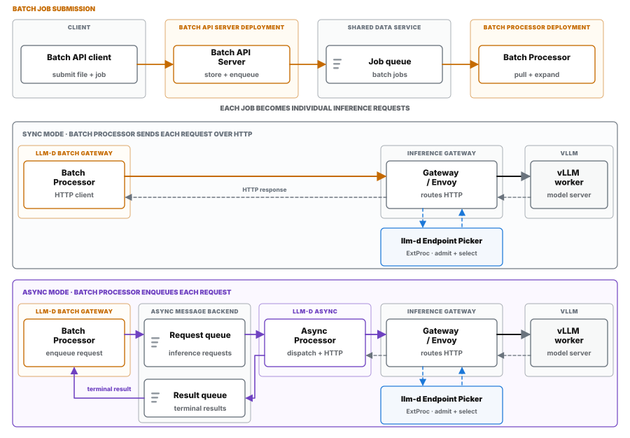
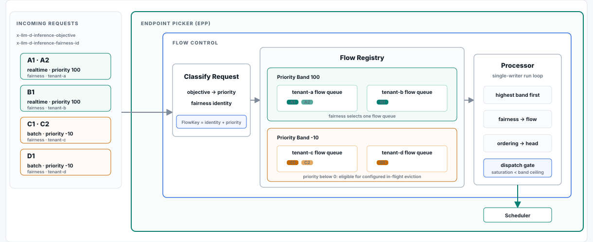
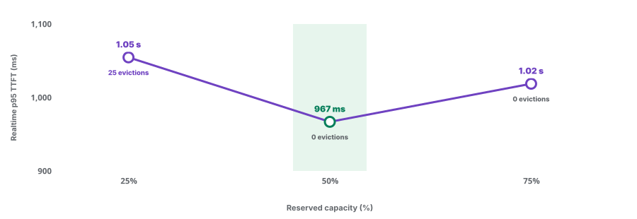
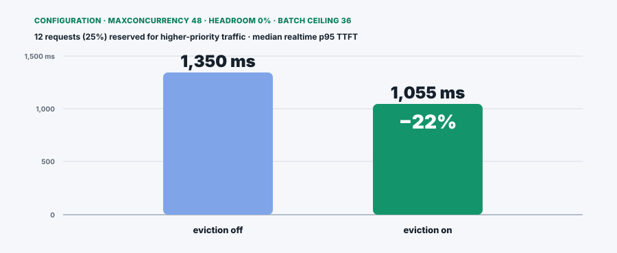
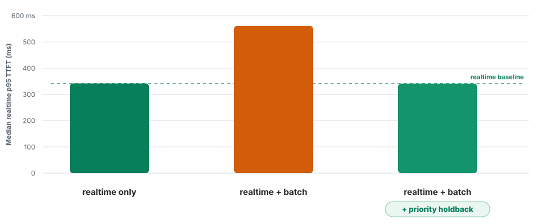
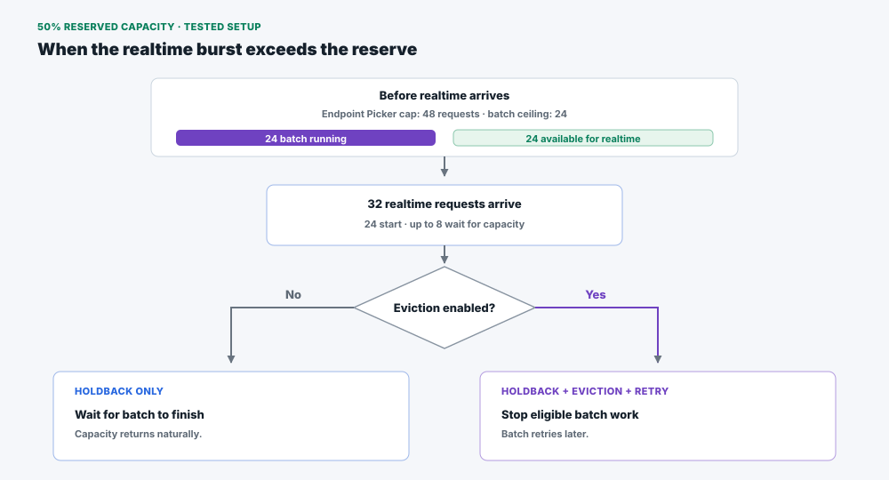
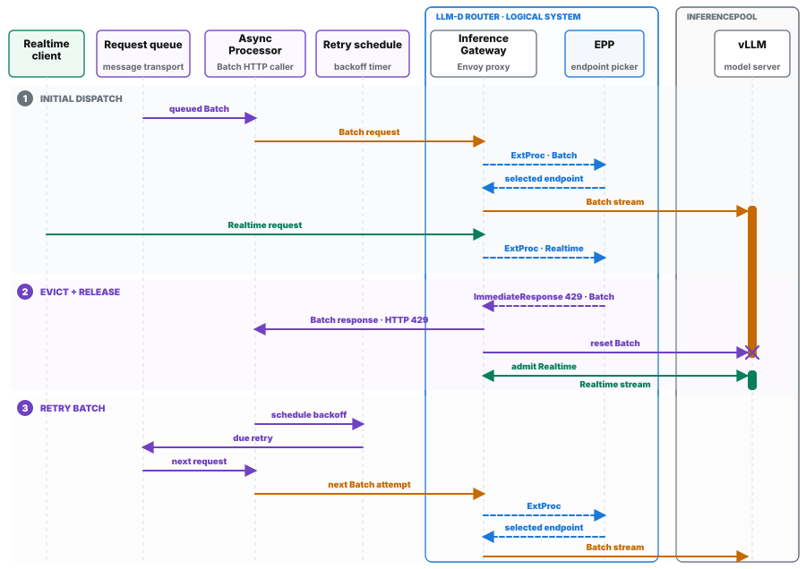
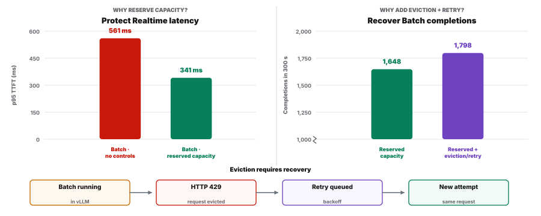

Hold back and batch eviction benchmark
Introduction
Benchmark overview
Realtime and batch requests can share the same GPUs to improve utilization. Shared capacity also creates a scheduling challenge: long-running batch work may already be using the model server when latency-sensitive requests arrive. Priority holdback prevents new lower-priority requests from consuming capacity set aside for higher-priority traffic before dispatch. Priority holdback can't recover capacity from batch requests already running in vLLM. Eviction interrupts an eligible request, frees capacity for higher-priority traffic, and lets Async Processor retry the interrupted request later.
In this overview, high-priority traffic generally refers to latency-sensitive traffic with the request-and-response pattern typical of interactive or realtime use. Lower-priority traffic generally refers to deferrable batch traffic that can finish later.

The benchmark ran in the following stages
- Established the high-priority baseline. The benchmark first ran one high-priority traffic flow by itself. The request pattern represented interactive traffic, with no other workload sharing the GPU. The resulting latency and throughput became the reference for later comparisons.
- Added lower-priority traffic. Lower-priority traffic started first and shared the model server with high-priority traffic. This stage showed how competition for the same model capacity affected the baseline.
- Verified the eviction-and-retry mechanism. The benchmark interrupted an eligible sheddable request already inside the model server, then confirmed that Async Processor could try the request again.
- Swept the configuration. The benchmark tested three limits on lower-priority traffic while holding the other request limits and the eviction setting fixed.
- Ran targeted pressure tests. Abrupt surges, long prompts, and an eviction-off comparison exposed settings that left too little capacity for high-priority traffic.
- Compared the four benchmark scenarios. The benchmark measured the high-priority baseline, shared traffic without controls, pre-dispatch limits, and pre-dispatch limits with eviction and retry using the same 300-second traffic schedule.
- Repeated the final configuration with two model replicas. The final test verified the request-level eviction-and-retry path with one Endpoint Picker and two model replicas.
Main takeaways
- With priority holdback, realtime latency returned to the same level as the realtime-only baseline while batch traffic continued to share the GPU.
- Adding eviction and retry increased median batch completions by 9% during the same 300-second window while reserved capacity remained fixed.
- Eviction did not permanently drop any observed batch work: every evicted request completed after retry, with one final result and no duplicates. The tradeoffs were recomputation and longer batch latency.
- In this benchmark, reserving 50% of request capacity produced the best tested balance between realtime latency and batch capacity.
- The two-model-replica tests showed the same eviction-and-retry behavior as the single-model-replica tests.
Terms to define
Terms and definitions
Language used in this benchmark
| Term | How it is used here |
|---|---|
| High-priority traffic / realtime | High-priority traffic generally refers to latency-sensitive traffic with the request-and-response pattern typical of interactive or realtime use. realtime is the benchmark label for the workload assigned priority 100. The benchmark label does not define a universal production profile. |
| Lower-priority traffic / batch | Lower-priority traffic is work that can wait or finish later when more urgent demand needs the shared capacity. batch is the benchmark label for requests assigned priority -10. Batch is a configured request classification. |
How llm-d classifies a request
| Term | How it is used here |
|---|---|
InferenceObjective | The request carries x-llm-d-inference-objective, which names an InferenceObjective. The Endpoint Picker resolves that resource, reads its priority for flow control, and uses its pool reference during endpoint selection. |
| Priority | The integer used to place requests into priority bands. Higher values represent more urgent work. These runs used 100 for realtime and -10 for batch. |
| Sheddable | Eligible to be interrupted when llm-d must free capacity for higher-priority work. llm-d treats requests with a priority below 0 as sheddable. A caller with retry support can submit the interrupted work again. |
Components in the request path
| Component | What it does in this benchmark |
|---|---|
| Endpoint Picker | The llm-d component that applies flow control and selects a model replica. In the eviction path, the Endpoint Picker also tracks eligible in-flight requests, selects one to evict, and constructs the HTTP 429 immediate response that Envoy returns. |
| Envoy | The proxy carrying the request stream between the caller and vLLM. For an eviction, Envoy returns HTTP 429 to the caller and ends that request's upstream vLLM stream. |
| vLLM model server | The component running inference on the GPU. Pre-dispatch controls can stop new work before the work reaches vLLM. Eviction addresses eligible lower-priority work already running in vLLM. |
| Async Processor | The HTTP caller used for the batch workload in these runs. Async Processor treats the HTTP 429 eviction response as retryable, waits through backoff, and submits another attempt through the normal request path. |
llm-d configuration and pre-dispatch controls
| Control | What it changes |
|---|---|
Request-concurrency detector / maxConcurrency | maxConcurrency sets the ideal request-count capacity for each replica. The selected configuration used 48 per replica. Flow control used those per-replica capacities to calculate pool saturation. |
| Headroom | Headroom raises the per-replica filtering limit above maxConcurrency by the configured fraction. Headroom does not change the pool-wide saturation calculation and does not distinguish among request priorities. |
| Priority holdback / admission ceiling | The pre-dispatch control that gives lower-priority bands earlier usage limits as the pool fills. When a priority band reaches its limit, new requests in that band wait. Reserved capacity describes the resulting capacity left available for higher-priority work. Reserved capacity is not a configuration name. |
Eviction and retry after dispatch
| Term | What happens |
|---|---|
| In-flight eviction | The after-dispatch control. When higher-priority demand is blocked, the Endpoint Picker can select an eligible lower-priority request already running in vLLM. Envoy ends the upstream stream. The request capacity returns to the shared pool after vLLM stops the request. |
HTTP 429 / retry / final result | HTTP 429 is the retryable response returned for the evicted request in this path. Async Processor retains the same internal request for backoff and starts another attempt later. A final result is the one terminal response produced after success. The benchmark checked for duplicate final results. |
System context
Architecture
These experiments used an Inference Gateway with llm-d providing flow control, plus KServe-managed inference pools running vLLM model servers. This section walks through the shared request path, how batch jobs enter that path, and where the Endpoint Picker applies flow control.

How batch jobs reach the shared serving path
Batch Processor expands each Batch API job into individual inference requests. In the synchronous path, Batch Processor sends each request to the Inference Gateway over HTTP. In the asynchronous path, Batch Processor publishes the requests and Async Processor sends them to the Inference Gateway. This benchmark used the asynchronous path.

Inside the Endpoint Picker
The Endpoint Picker classifies each request by priority and fairness identity. These values form the flow key that places the request in a priority band and tenant queue. The processor dispatches requests as capacity becomes available. After dispatch, the Endpoint Picker tracks eligible lower-priority requests for possible eviction.

Priority holdback acts before dispatch by limiting lower-priority traffic as the pool fills. Eviction acts after dispatch by interrupting eligible lower-priority work already running in vLLM.
Configuration
Configuration and tuning
Earlier request-concurrency tuning tested five settings and found the lowest premium p95 TTFT at maxConcurrency=48 per replica. These eviction experiments carried that tested operating point forward. Priority holdback, added in llm-d v0.10, set priority-specific admission ceilings before dispatch. Experimental in-flight eviction handled eligible lower-priority work after dispatch.
How the controls differ

maxConcurrency defines request-count capacity. Priority holdback creates reserved capacity by stopping lower-priority requests at an earlier admission ceiling. Eviction can recover capacity from eligible lower-priority work already running in vLLM.
Choosing reserved capacity
The benchmark compared 25%, 50%, and 75% reserved capacity with eviction enabled. Headroom remained at 0% so the per-replica filtering threshold stayed fixed while the priority-holdback ceiling changed. The corresponding batch admission ceilings were 75%, 50%, and 25%.

For this workload, 50% reserved capacity produced the best tested balance between realtime latency and batch capacity. The result identifies the best of three tested settings, not a universal optimum.
What eviction changed at 25% reserve
The eviction-isolation test capped batch at 36 of 48 request positions. This 75% batch ceiling left 12 positions, or 25%, available for higher-priority traffic. The test held the admission setting fixed and compared eviction disabled and enabled.

At 25% reserve, eviction improved the realtime median but increased batch computation and latency. At 50% reserve, no evictions occurred in the sweep. For this workload, eviction served as an overflow control rather than a substitute for sufficient reserved capacity.
Workload shapes
| Traffic | Configuration and purpose |
|---|---|
| Realtime | Priority 100. The test began with 32 requests, then added requests through a seeded arrival pattern that varied around four requests per second. Short outputs represented latency-sensitive interactive demand. |
| batch | Priority -10. A 64-job Async Processor backlog started 60 seconds before realtime traffic. Longer outputs kept eligible lower-priority work inside vLLM when higher-priority demand arrived. |
| Standard | Priority 0. A mechanism test confirmed that Standard requests could reclaim capacity from lower-priority batch work. Standard traffic was not part of the final four matched result scenarios. |
Realtime result
Realtime latency was preserved under mixed load
Without protection, batch traffic increased median realtime p95 TTFT by 64% under mixed load. Priority holdback reduced the mixed-load median by 39% and kept realtime latency at the same measured level as the realtime-only baseline while batch continued to share the GPU. The 1 ms difference between the holdback and baseline medians does not establish a statistical difference.

| Scenario | Median realtime p95 TTFT | What the result shows |
|---|---|---|
| Realtime only | 342 ms | The reference latency without batch traffic. |
| Unprotected mixed traffic | 561 ms | Batch traffic could fill the shared request budget and increased the realtime median by 64%. |
| Priority holdback | 341 ms | Batch traffic stopped at the 24-request admission ceiling, leaving half of the 48-request budget for higher-priority traffic. |
| Priority holdback with eviction and retry | 348 ms | Realtime remained near baseline. Eviction did not improve this median beyond holdback alone. |
When the realtime burst exceeded the reserve
The 32-request realtime burst exceeded the 24 protected positions, so up to eight requests still waited. Without eviction, those requests waited for batch work to finish naturally. With eviction, realtime could use capacity released by eligible batch work, while Async Processor retried the interrupted work later.

What we learned
- Realtime stayed near baseline in both 50% reserve configurations. Median realtime p95 TTFT was 341 ms with holdback alone and 348 ms with eviction and retry. Every observed evicted batch request was retried and produced one final result with no duplicates.
- A stronger eviction test needs sustained after-dispatch contention. Run the same long batch workload and realtime arrivals with a fixed reserve, first with eviction disabled and then enabled. Measure the wait from realtime arrival to released vLLM capacity. Eviction can improve TTFT only when an interrupted batch stream releases capacity faster than the batch request would finish naturally.
- Reserved capacity trades batch throughput for realtime protection. A larger reserve gives realtime more immediate capacity but lowers the batch admission ceiling. A smaller reserve allows more concurrent batch work but increases the chance that realtime waits and eviction activates. The 50% reserve was the best tested balance for this workload.
Eviction result
Eviction and retry completed 9% more batch requests while realtime stayed near baseline
With 50% reserved capacity held fixed, eviction and retry increased median batch completions by 9% during the same 300-second window. Realtime median p95 TTFT remained near baseline, and every observed evicted batch request completed through retry.
How one eviction and retry completes

The Endpoint Picker uses the request's stored target replica to identify the stream. Capacity returns to the shared pool after vLLM stops the request. Priority-aware dispatch then selects the next queued request.
Measured result

| Outcome | Measured result | Takeaway |
|---|---|---|
| Batch completions | 1,648 to 1,798 | Eviction and retry completed 150 additional batch requests per 300-second run, a 9% increase. |
| Retry completion | 38 of 38 evictions | Every observed evicted request produced one final result with no duplicates. |
| Realtime latency | 341 ms to 348 ms | Median realtime p95 TTFT remained near baseline when eviction and retry were added to priority holdback. |
What happens to interrupted work
Async Processor treats the eviction response as retryable, waits through backoff, and submits the request through normal scheduling again. The retry produces the final result.
Retry cost
These runs disabled prefix caching, and vLLM freed the interrupted request's KV-cache blocks. The retry recomputed the prompt. This benchmark does not establish whether a cache-enabled configuration could reuse a matching prefix.